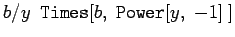

Mathematica gestattet dem Nutzer, eigene Funktionen zu definieren und sie in seinen Berechnungen zu nutzen.
Mit
| (20.18) |
mit Polynom(x) als beliebigem Polynom der Variablen  wird eine spezielle Funktion durch den Anwender definiert.
wird eine spezielle Funktion durch den Anwender definiert.
In der Definition der Funktion steht nicht  , sondern (gesprochen x-blank) mit als dem Unterstrich. Das Symbol steht für ,,Irgendetwas mit dem Namen x``. Von hier an wird Mathematica jedesmal, wenn ein Ausdruck erscheint, dies durch seine obige Definition ersetzen. Diese Art der Definition wird Muster genannt. Mit dem Symbol blank ist das Grundelement eines Musters bezeichnet; steht für: ein Muster namens . Es ist auch möglich, in der entsprechenden Definition nur ein zu verwenden, also etwa . Dieses Muster steht für beliebige Potenzen von y mit irgendwelchen Exponenten, also für eine ganze Klasse von Ausdrücken mit der gleichen Struktur. Entscheidend an einem Muster ist, daß es eine Struktur festlegt. Wenn Mathematica einen Audruck bezüglich eines Musters prüft, vergleicht es die Struktur der Elemente des Ausdrucks mit der Struktur des Musters, Mathematica prüft nicht auf mathematische Gleichheit! Dies wird folgendermaßen deutlich: Sei l die Liste
, sondern (gesprochen x-blank) mit als dem Unterstrich. Das Symbol steht für ,,Irgendetwas mit dem Namen x``. Von hier an wird Mathematica jedesmal, wenn ein Ausdruck erscheint, dies durch seine obige Definition ersetzen. Diese Art der Definition wird Muster genannt. Mit dem Symbol blank ist das Grundelement eines Musters bezeichnet; steht für: ein Muster namens . Es ist auch möglich, in der entsprechenden Definition nur ein zu verwenden, also etwa . Dieses Muster steht für beliebige Potenzen von y mit irgendwelchen Exponenten, also für eine ganze Klasse von Ausdrücken mit der gleichen Struktur. Entscheidend an einem Muster ist, daß es eine Struktur festlegt. Wenn Mathematica einen Audruck bezüglich eines Musters prüft, vergleicht es die Struktur der Elemente des Ausdrucks mit der Struktur des Musters, Mathematica prüft nicht auf mathematische Gleichheit! Dies wird folgendermaßen deutlich: Sei l die Liste
 |
(20.19) |
Setzt man
| (20.20) |
so antwortet Mathematica mit der Liste
| (20.21) |
Mathematica hat die Elemente der Liste in bezug auf ihre Strukturidentität mit dem Muster  untersucht und in allen Fällen, in denen Übereinstimmung festgestellt wurde, das jeweilige Element durch ja ersetzt. Die Elemente 1 und y wurden nicht ersetzt, da sie nicht von der vorgegebenen Struktur sind, obwohl y0=1,y1=y gilt.
untersucht und in allen Fällen, in denen Übereinstimmung festgestellt wurde, das jeweilige Element durch ja ersetzt. Die Elemente 1 und y wurden nicht ersetzt, da sie nicht von der vorgegebenen Struktur sind, obwohl y0=1,y1=y gilt.
Bemerkung: Der Mustervergleich erfolgt immer über die . Prüft man
| (20.22) |
Das ist eine Folge dessen, daß die von  lautet und beim Strukturvergleich das zweite Argument von als zur Struktur des Musters passend erkannt wird.
Mit der Definition
| (20.23a) |
ersetzt Mathematica entsprechend dem vorgegebenen Muster
| (20.23b) |
| (20.23c) |
Hätte man definiert
| (20.23d) |
die Ausgabe
| (20.23e) |
entstanden. In diesem Fall spricht also nur die ,,identische`` Eingabe auf die Definition an.